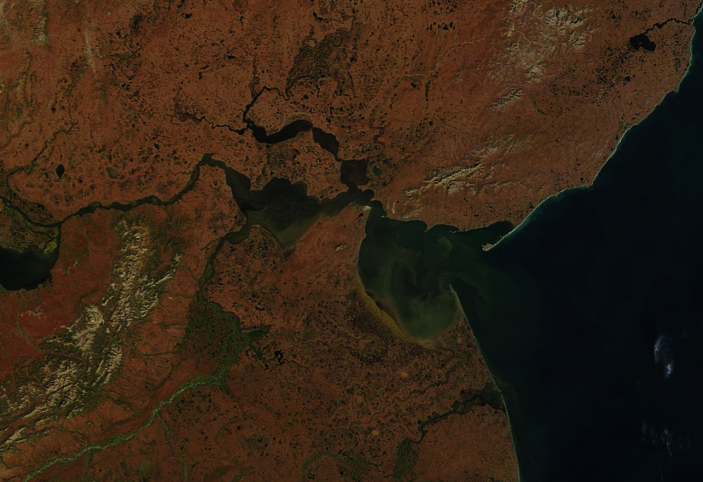

Color Along the Anadyr
At the planet’s northern latitudes, plant life has adapted to flourish during short summers with long daylight hours. This includes the vegetation growing across the subarctic tundra in northeastern Siberia—a landscape that remains frozen for most of the year.
During the summer, the tundra around the Anadyr River and its estuary comes alive with a range of perennial plants, including dwarf shrubs, mosses, and lichens, as well as sedges and grasses. For most of the season, these plants blanket the landscape in various shades of green. In September, however, a colorful shift occurs.
The transition is apparent in this pair of images. On August 9 (left), lush, green vegetation spanned the landscape. About a month later (right), striking reds, yellows, and browns prevailed. A few patches of green remained in the Rarytkin Range (Khebet Rarytkin), visible toward the bottom left, possibly from thickets of evergreen shrub pines that grow on the mountain’s lower slopes. Both images were acquired by the MODIS (Moderate Resolution Imaging Spectroradiometer) sensor on NASA’s Terra satellite.
The brilliant color associated with autumn reaches its peak when air temperatures drop and limited daylight causes plants to slow and stop the production of chlorophyll—the molecule that plants use to synthesize food. Without chlorophyll, the green pigment fades, revealing various yellow and red pigments. The northernmost latitudes see these changes first, with fall colors emerging as early as September. Farther south, peak color can show up as late as mid-November.
Even in this remote region, the changing seasons are noticed by people. Communities are scattered along the shores of the river and gulf, with the largest shown here being Anadyr—a port town situated at a latitude similar to Fairbanks, Alaska, and home to around 15,000 residents.